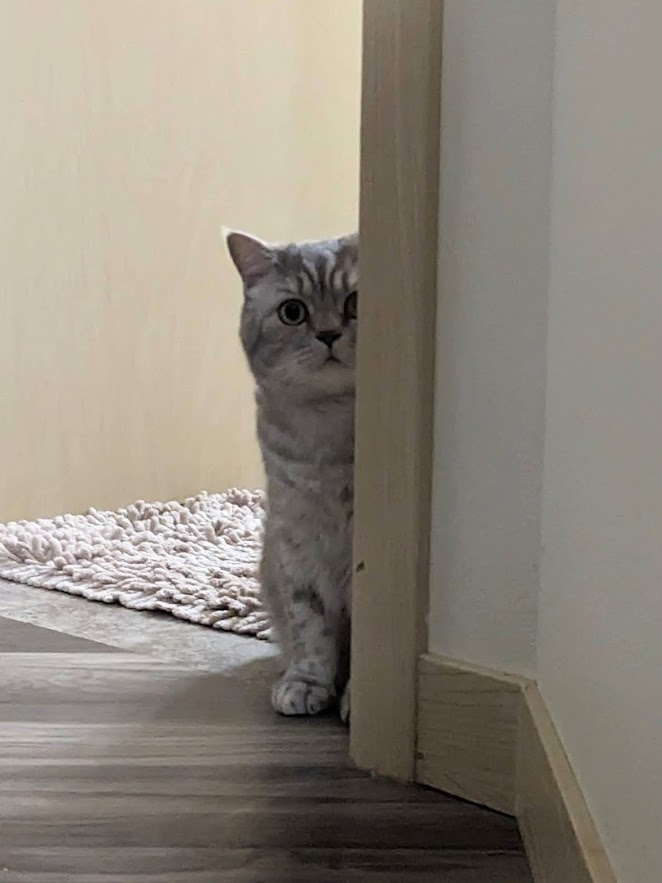

404
what you're looking for isn't here (yet)
but you found
Mam---Mam is
Thao's cat 🐈 ~~~ Mam is living with his brother---Bo 🥑.

Bo and Mam have appeared on multiple
Thao's papers. Can you spot them? 😉
~~~ Now you can go back to wherever you were before ~~~